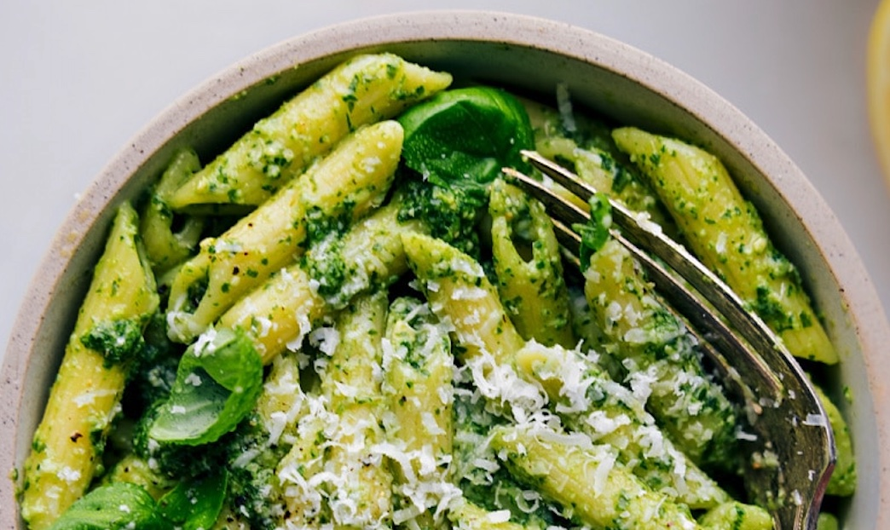

Pesto

Decription
You could put this pesto on a flip flop and it would still taste good! I serve it up at the peak of summer with fresh slices of heirloom tomatoes and burrata. It's hard to believe that this sauce comes together in under 5 minutes- making it perfect for those hot summer days where the kitchen is the last place we want to be!
Ingredients
- 3 cups packed fresh basil leaves
- ¾ cup grated Parmesan cheese
- ½ cup olive oil
- ¼ cup pine nuts
- 4 cloves garlic, or to taste
- 2 teaspoons lemon juice, or more to taste (optional)
- Salt, to taste
Steps
- Add pine nuts and garlic in the bowl of a food processor or blender. Pulse until coarsly chopped.
- Add basil, Parmesan cheese, and olive oil. Then, blend until you reach your desired consistency.
- Add lemon juice and salt to taste and quickly pulse to combine. Enjoy!